Guide to DSP Pt. 1
Chapter 1: The Breadth and Depth of DSP
Digital signal processing is distinguished from other areas in computer science in that the type of data it uses consists of signals. DSP is the mathematics, algorithms, and techniques used to manipulate signals once converted into a digital form. This includes a wide variety of goals, such as enhancement of visual images, speech recognition, and data compression and transmission.
At first, in the 1960s and 1970s, it appeared in radar and sonar applications; then oil exploration, space exploration, and medical imaging. There was an explosion of new application during the PC revolution of the 1980s and 1990s.
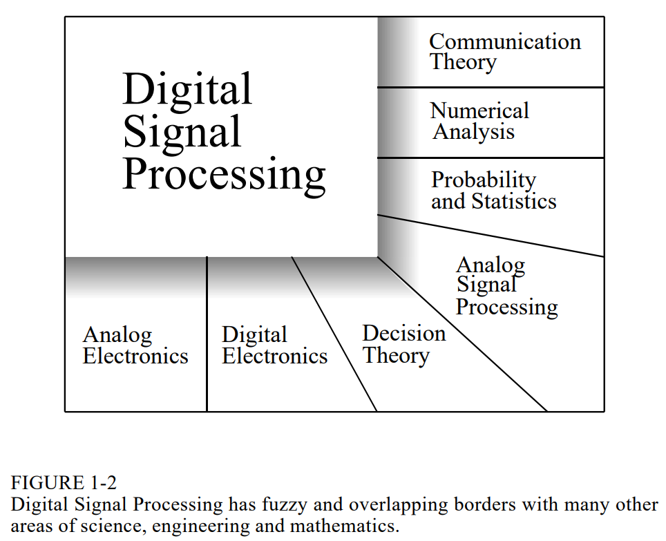
Some applications and subapplications include:
- Telecommunications
- Multiplexing
- Compression
- Echo Control
- Audio Processing
- Music
- Speech Generation
- Speech Recognition
- Echo Location
- Radar
- Sonar
- Reflection Seismology
- Image Processing
- Medical
- Space
- Commercial
Chapter 2: Statistics, Probability, and Noise
A primary use of DSP is to reduce interference, noise, and other undesirable components in acquired data. These may be an inherent part of the signal being measured, arise from imperfections in the data acquisition system, or be introduced as an unavoidable byproduct of some DSP operation.
Signal Terminology
A signal describes how one parameter is related to another; for example, voltage that varies with time. Both parameters assume a continuous range of values, so this is called a continuous signal. However, passing through an analog-to-digital converter forces each parameter to be quantized (discretized).
Mean and Standard Deviation
The mean is commonly called the DC (direct current) value. AC (alternating current) refers to how the signal fluctuates around the mean value. The average deviation provides a single number representing the typical distance that the samples are from the mean, but doesn't fit well with the physics of how signals operate. In most cases, the important parameter is not the deviation from the mean, but rather, the power represented by deviation from the mean (power is voltage squared). When random noise signals combine in an electronic circuit, the resultant noise is equal to the combined power of the individual signals. The square root can be taken, to compensate for the initial squaring, yielding standard deviation. Variance represents the power of fluctuation.
The root mean square (RMS) value is frequently used in electronics. By definition, the standard deviation only measures the AC portion of a signal, while the RMS value measures both the AC and DC components. If a signal has no DC component, its RMS value is identical to its standard deviation.
In some situations, the mean describes what is being measured, while the standard deviation represents noise and other interference. In these cases, the standard deviation is important only in its comparison to the mean. This gives rise to the term signal-to-noise ratio (SNR), equal to the mean divided by the standard deviation. The coefficient of variation (CV) is calculated as the standard deviation divided by the mean and multiplied by 100. A signal with a CV of 2% has a SNR of 50.
Signal vs. Underlying Process
Probability is used in DSP to understand the processes that generate signals. Though closely related, the distinction between the acquired signal and underlying process is key to many DSP techniques. The probabilities of the underlying process are constant, but the statistics of the acquired signal change each time the experiment is repeated. This random irregularity is called statistical variation, statistical fluctuation, or statistical noise.
A common problem with nonstationary signals is that the slowly changing mean interferes with the calculation of the standard deviation. The error can be nearly eliminated by breaking the signal into short sections and calculating the statistics for each section individually. The standard deviations for each of the sections can be averaged to produce a single value.
Precision and Accuracy
Precision and accuracy are terms often used interchangably in non-technical settings, but in science and engineering there are specific definitions for each. The mean may be shifted from the true value, and the amount of this shift is called the accuracy of the measurement. Individual measurements may not agree well with each other, and this is called the precision of the measurement (expressed via the standard deviation, SNR, or coefficient of variation). A measurement that has good accuracy but poor precision is centered over the true value, but very broad. Poor precision results from random errors and poor accuracy results from systematic errors.
Chapter 3: ADC and DAC
Most signals directly encountered in science and engineering are continuous. Analog-to-digital conversion (ADC) and digital-to-analog conversion (DAC) allow computers to interact with these signals. Digital information is sampled and quantized; both of these restrict how much information a digital signal can contain (this chapter is about information managment). When faced with the decision of how many bits are needed in a system, ask two qeustions:
- How much noise is already in the analog signal?
- How much noise can be tolerated in the digital signal?
Dithering
Dithering is a common technique for improving the digitization of slowly varying signals. A small amount of random noise is added to the analog signal, and the added noise causes the digital output to randomly toggle between adjacent quantization levels. As such, adding noise can actually provide more information.
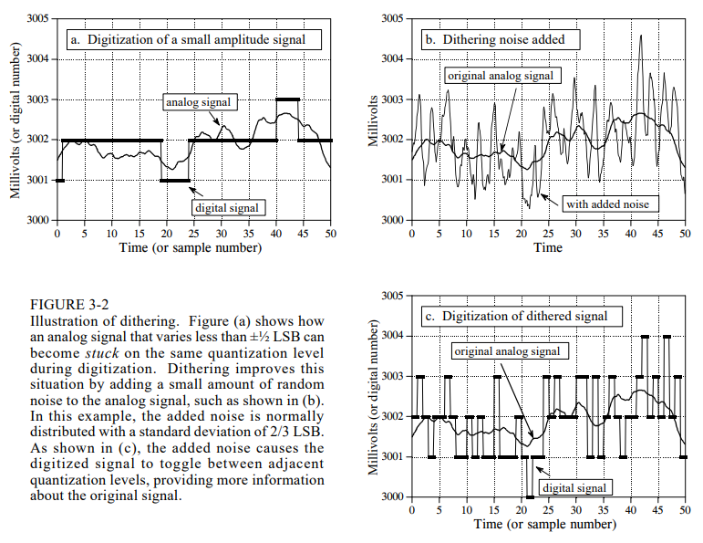
The Sampling Theorem
Sampling is done properly if one can reverse the process to exactly reconstruct the analog signal from the samples. The sampling theorem indicates that a continuous signal can be properly sampled if it does not contain frequency components above half of the sampling rate. If frequencies above this limit are present in the signal, they will be aliased to other frequencies.
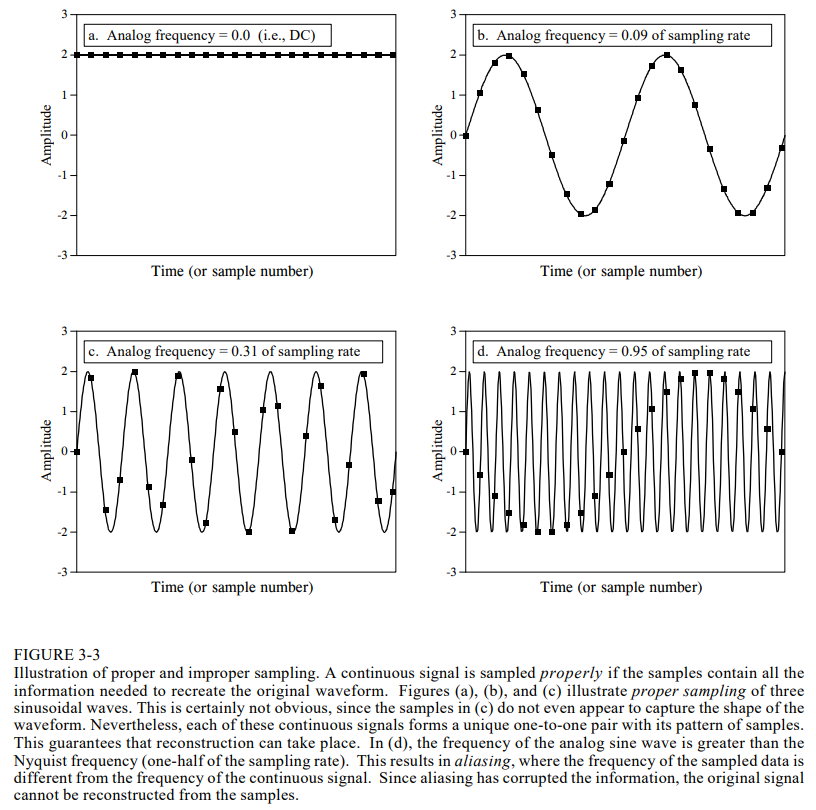
To understand what happens to the information when a signal is converted from continuous to discrete form, the solution is to introduce a theoretical concept called the impulse train. The impulse train is a continuous signal consisting of a series of narrow spikes (impulses) that match the original signal at the sampling instants. Each impulse is infinitessimally small (discussed in chapter 13), and between these sampling times, the value of the waveform is 0. Since both the original analog signal and the impulse train are continuous waveforms, we can make a fair comparison between the two. The original analog signal can be perfectly reconstructed by passing this impulse train through a low-pass filter, with the cutoff frequency equal to half of the sampling rate. In other words, the original signal and the impulse train have identical frequency spectra below the Nyquist frequency. At higher frequencies, the impulse train contains a duplication of this information, while the original analog signal contains nothing (assuming aliasing did not occur).
Analog Filters for Data Conversion
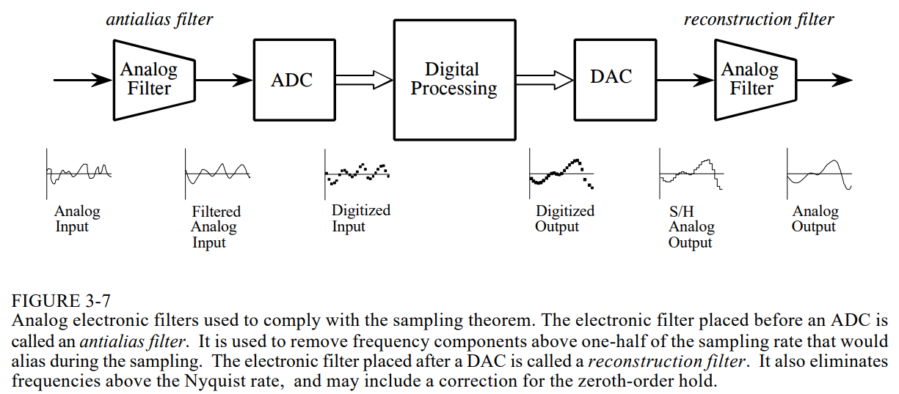
An understanding of the properties of analog filters is important for successful DSP. The characteristics of every digitized signal you will encounter will depend on what type of antialias filter was used when it was acquired, and the future of DSP is to replace hardware with software.
There are 3 types of analog filters commonly used: Chebyshev, Butterworth, and Bessel (a.k.a. Thompson) filters. Each is designed to optimize a different performance parameter. The complexity of each can be adjusted by selecting the number of poles and zeros (mathematical terms discussed in later chapters). The more poles in a filter, the more electronics it requires, and the better it performs.
The first performance parameter we want to explore is cutoff frequency sharpness. A low-pass filter is designed to block all frequencies above the cutoff frequency (the stopband), while passing through all frequencies below (the passband).
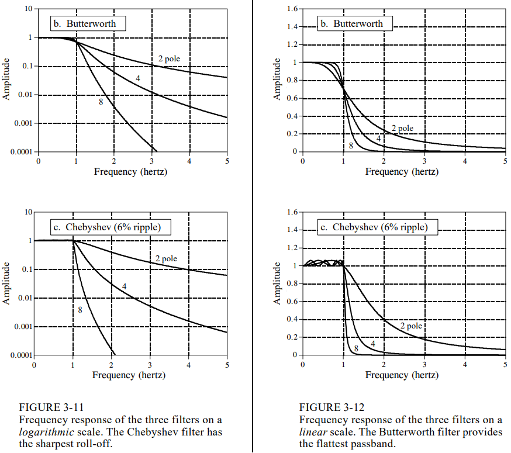
Chebyshev is designed to roll-off (drop in amplitude) as rapidly as possible, and this is done by allowing the 'passband ripple' apparent in the image above. Eliptic filters allow ripple in both the passband and the stopband, and though harder to design, achieve an even better tradeoff between roll-off and passband ripple. The Butterworth filter (a.k.a. maximally flat filter) is optimized to provide the sharpest roll-off without allowing ripple in the passband, and is identical to a Chebyshev designed for zero passband ripple. The Bessel filter has no ripple in the passband, but the roll-off is worse than with Butterworth. The Butterworth and Chebyshev filters overshoot and show ringing, oscillations that slowly decrease in amplitude. The Bessel filter has neither of these issues.
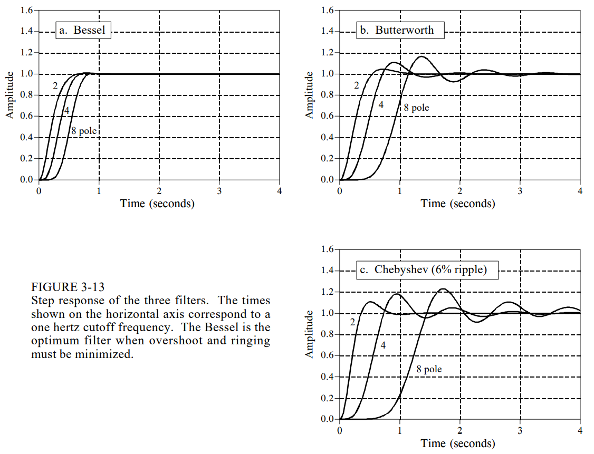
Selecting the Antialias Filter
Each of the 3 filters optimizes a particular parameter at the expense of everything else. The Chebyshev optimizes roll-off, the Butterworth optimizes passband flatness, and the Bessel optimizes the step response. The selection of antialias filter depends almost entirely on how information is represented in the signals you intend to process. The two most common ways for information to be encoded in analog waveforms are time domain encoding and frequency domain encoding.
In frequency domain encoding, such as with audio signals, the information is contained in sinusoidal waves that combine to form the signal. This can mean passing an audio signal through a circuit that changes the phase of various sinusoids, but retains their frequency and amplitude. Since aliasing destroys information encoded in the frequency domain, digitization of these signals usually involves an antialias filter with a sharp cutoff. The step response of these filters doesn't matter; the encoded information is not affected by this type of distortion. Time domain encoding, such as with the electrical activity of an electrocardiogram, uses the shape of the waveform to store information.
Chapter 5: Linear Systems
Most DSP techniques are based on a divide-and-conquer strategy called superposition. The signal being processed is broken into simple components, each component processed individually, and the results reunited. This breaks a single complicated problem into many easy ones. Superposition can be used only with linear systems, a term meaning that certain mathematical rules apply.
Signals and Systems
A signal is a description of how one parameter varies with another. A system is any process that produces an output signal in response to an input signal. Continuous systems input and output continuous signals; discrete systems input and output discrete signals. Continuous signals use parantheses such as $x(t)$ and $y(t)$, while discrete signals use brackets such as $x[n]$ and $y[n]$. Signals use lower-case letters, and upper-case letters are reserved for the frequency domain.
There are many reasons for wanting to understand a system. For example, you may want to design a system to remove noise in an electrocardiogram, sharpen an out-of-focus image, or remove echoes in an audio recording. The system may have a distortion or interfering effect that you need to characterize or measure. These methods operate by comparing the transmitted and reflected signals to find the characteristics of a remote object.
Without the linear system concept, we would be forced to examine individual characteristics of many unrelated systems. With this approach, we can focus on the traits of the linear system category as a whole.
Requirements for Linearity
A system is called linear if it has two mathematical properties: homogeneity and additivity. A third property, shift invariance, is not a strict requirement, but is a mandatory property for most DSP techniques. Homogeneity means that a change in the input signal's amplitude results in a corresponding change in the output signal's amplitude. In mathematical terms, if an input signal $x[a]$ results in an output of $y[n]$, an input of $kx[n]$ results in an output of $ky[n]$, for any input signal and constant $k$.
A simple resistor provides a good example of both homogenous and non-homogenous systems. If the input to the system is the voltage across the resistor, $v(t)$, and the output from the system is the current through the resistor, $i(t)$, the system is homogenous. Ohm's law guarantees that if the voltage is increased or decreased, there will be a corresponding increase or decrease in the current. Consider the case where the input signal is the voltage across the resistor, $v(t)$, but the output signal is the power being dissipated in the resistor, $p(t)$. Since power is proportional to the square of voltage, if the input signal is increased by a factor of $2$, the output signal is increased by a factor of $4$. This system is not homogenous and therefore cannot be linear.
The system is said to be additive if an input of $x_1[n] + x_2[n]$ results in an output of $y_1[n] + y_2[n]$, for all possible input signals - i.e., signals added at the input produce signals that are added at the output. The important point is that added signals pass through the system without interacting.
Shift invariance means that a shift in the input signal will result in nothing more than an identical shift in the output signal. In more fomal terms, an input signal of $x[n]$ results in an output of $y[n]$, an input signal of $x[n+s]$ results in an output of $y[n+s]$, for any input signal and any constant $s$. Most systems you will encounter will be shift-invariant. Shift invariance can be thought of as an additional aspect of linearity needed when signals and systems are involved.
Static Linearity and Sinusoidal Fidelity
Homogeneity, additivity, and shift invariance are important because they provide the mathematical basis for defining linear systems. But these properties alone do not provide an intuition about what linear systems are about. The properties of static linearity and sinusoidal fidelity are often of help here.
Static linearity defines how a linear system reacts when the signals aren't changing; i.e., when they are DC or static. The static response of a linear system is that the output is the input multiplied by a constant. This is shown in Ohm's law for resistors, and Hooke's law for springs.
All linear systems have the property of static linearity. The opposite is not always true. 'Memoryless' systems can be completely understood with static linearity alone. In these systems, it does not matter if the input signal is static or changing. These are called memoryless systems because it doesn't matter if the input signal is static or changing; the output depends only on the present state of input. If a system has static linearity, and is memoryless, then the system must be linear.
An important characteristic of linear systems is how they behave with sinusoids; if the input to a linear system is a sinusoidal wave, the output will also be a sinusoidal wave, and at exactly the same frequency as the input. If a system always produces a sinusoidal output in response to a sinusoidal input, then it is not necessarily linear, but the exceptions are rare and usually obvious.
Examples of Linear Systems
- Wave Propagation: such as sound and magnetic waves
- Electrical Circuits: composed of resistors, capacitors, and inductors
- Electronic Circuits: such as amplifiers and filters
- Mechanical Motion: from the interaction of messes, springs, and dashpots (dampeners)
- Systems Described by Differential Equations: such as resistor/capacitor/inductor networks
- Multiplication by a Constant: amplification or attenuation of a signal
- Signal Changes: such as echoes, resonances, and image blurring
- The Unity System: where the input always equals the output
- The Null System: where the output always equals $0$
- Convolution: an operation where each value in the output is expressed as the sum of values in the input multiplied by a set of weighing coefficients
- Recursion: a technique similar to convolution, except previously calculated values in the output are used in addition to values from the input
Examples of Nonlinear Systems
- Systems that do not have static linearity
- Systems that do not have sinusoidal fidelity: such as electronics circuits for peak detection, squaring, sine wave to square wave conversion, frequency-doubling, etc.
- Common electronic distortion: such as clipping, crossover distribution, slewing
- Multiplication of one signal by another signal, such as in amplitude modulation and automatic gain controls
- Hysteresis Phenomena: such as magnetic flux density vs. magnetic intensity in iron, or mechanical stress vs. strain in vulcanized rubber
- Saturation: such as with electronic amplifiers and transformers driven too hard
- Systems with a Threshold: such as digital logic gates, seismic vibrations that pulverize the intervening rock
Special Properties of Linearity
Linearity is commutative. If two systems are linear, then the overall combination will also be linear. The commutative property states that the order of the systems in the cascade can be rearranged without affecting the characteristics of the overall combination.
Superposition: The Foundation of DSP
When we are dealing with linear systems, the only way signals can be combined is by scaling (multiplication by constants), followed by addition. A signal cannot be multiplied by another signal, for instance. The process of combining signals through scaling and addition is called synthesis. Decomposition is the inverse operation of synthesis, where a signal is broken into additive components.
Now we come to the heart of DSP: superposition; the overall strategy for understanding how signals can be analyzed. Consider an input signal $x[n]$ passing through a linear system and producing output signal $y[n]$. The input signal can be decomposed into a group of simpler signals. We will call these input signal components. Each input signal component is individually passed through the system, resulting in a set of output signal components. These output signal components are then synthesized into the output signal $y[n]$.
The important part is that the output signal obtained by this method is identical to the one produced by directly passing the input signal through the systems. In the jargon of signal processing, the input and output signals are viewed as a superposition (sum) of simpler waveforms. This is the basis of nearly all signal processing techniques.
Common Decompositions
There are two main ways to decompose signals in signal processing: impulse decomposition and Fourier decomposition (described in detail in the next several chapters).
Impulse decomposition breaks an $N$-samples signal into $N$ component signals, each containing $N$ samples. Each of the component signals contains one point from the original signal, and the rest of the values are zero. A single non-zero point in a string of zeros is called an impulse, and impulse decomposition is important because it allows signals to be examined one sample at a time. By knowing how a system responds to an impulse, the system's output can be calculated for any given input. This approach is called convolution (and is the topic of the next two chapters).
Step decomposition breaks an $N$-sample signal into $N$ component signals, each composed of $N$ samples. Each component signal is a step; the first samples have a value of $0$, while the last samples are some constant value.
Consider a decomposition of an $N$-point signal $x[n]$ into the components $x_0[n], x_1[n], x_2[n], \ldots, x_{n-1}[n]$. The $k^{th}$ component signal, $x_k[n]$, is composed of zeros for points $0$ through $k-1$, while the remaining points have a value of $x[k] - x[k-1]$.
Just as impulse decomposition looks at signals one point at a time, step decomposition characterizes signals by the difference between adjacent samples.
Even/Odd Decomposition
The even/odd decomposition breaks a signal into two component signals; one having even symmetry, and the other having odd symmetry. An $N$-point signal is said to have symmetry if it is a mirror image around point $N/2$. Similarly, odd symmetry occurs when the matching points have equal magnitudes but are opposite in sign. These definitions assume that the signal is composed of an even number of samples, and that the indices run from $0$ to $N-1$.
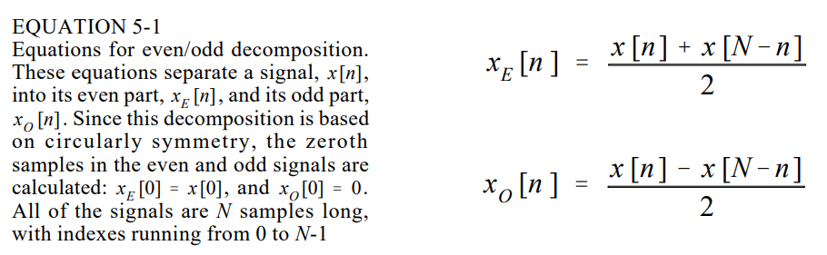
Fourier Decomposition
Any $N$-point signal can be decomposed into $N+2$ signals, half of them sine waves and half of them cosine waves. The lowest frequency cosine wave makes zero cycles over the $N$ samples; i.e., it is the DC signal. The frequency of each component is fixed; what changes for different signals being decomposed is the amplitude of each of the sine and cosine waves.
Fourier decomposition is important for 3 reasons:
- A wide variety of signals are inherently created from superimposed sinusoids. Audio signals are an example.
- In linear systems, a sinusoidal input results in a sinusoidal output. Since an input signal can be decomposed into sinusoids, knowing how a system will react to sinusoids allows the output of a system to be found.
- The Fourier decomposition is the basis for a broad and powerful area of mathematics called Fourier analysis, and the even more advanced Laplace and z-transforms.
Alternatives to Linearity
There is only one major strategy for analyzing systems that are nonlinear. That strategy is to make the nonlinear system resemble a linear equation. There are 3 common ways of doing this:
- Ignore the nonlinearity; if it is small enough, the system can be approximated as linear
- Keep signals small: many nonlinear systems appear linear if the signals have a very small amplitude
- Apply a linearizing transform. Consider two signals being multiplied to make a third; $a[n] = b[n] \times c[n]$
Taking the logarithm of the signals changes the nonlinear process of multiplication into the linear process of addition:
$$log(a[n]) = log(b[n]) + log(c[n])$$
This is known as holomorphic signal processing.
Chapter 6: Convolution
Convolution provides the mathematical framework for DSP; It is important because it relates the 3 signals of interest: the input signal, the output signal, and the impulse response.
The previous chapter describes how a signal can be decomposed into a group of components called impulses, and that an impulse is a signal composed of all zeros, except a single non-zero point. The previous chapter also presented the fundamental concept of DSP: the input signal is decomposed into simple additive components, each of those components is passed through a linear system, and the resulting output components are synthesized (added). The signal obtained by this procedure are identical to what is obtained by directly passing the original signal through the system.
While many different decompositions are possible, the two that form the backbone of signal processing are impulse decomposition and Fourier decomposition. When impulse decomposition is used, the procedure can be described by a mathematical operation called convolution.
Figure 6-1 defines two important terms used in DSP. The first is the delta function, symbolized by the Greek letter delta, $\delta [n]$. The delta function is a normalized impulse; sample zero has a value of $1$, while all other samples have a value of zero. It is frequently called the unit impulse.
The impulse response is the signal that exits a system when a delta function (unit impulse) is the input. If two systems are different in any way, they will have different impulse responses. The impulse response is usually given the symbol $h[n]$. To identify it as a filter, $f[n]$ is sometimes used as well. Any impulse can be represented as a shifted and scaled delta function. $a[n] = -3[n-8]$ notes a delta function shifted to the right by $8$ samples, and multiplied by $3$.
Convolution
Let's summarize our understanding of how a system changes an input signal to an output signal
- The input signal can be decomposed into a set of impulses, each of which can be viewed as a scaled and shifted delta function
- The output resulting from each impulse is a scaled and shifted version of te impulse response
- The overall output signal can be found by adding these scaled and shifted impulse responses. i.e., if we know the impulse response, we can calculate the output given the input.
If the system being considered is a filter, the impulse response is called the filter kernel, convolution kernel, or simply the kernel.
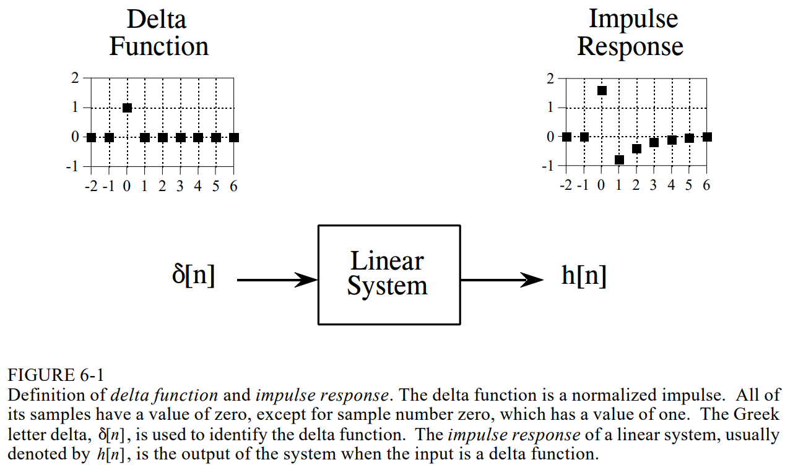
Convolution is used to describe the realtionship between 3 signals of interest: 1) the input signal, 2) the impulse response, and 3) the output signal. An input signal $x[n]$ enters a linear system with an impulse response $h[n]$, resulting in an output signal $y[n]$. In equation form, $x[n] * h[n] = y[n]$. The input signal convolved with the impulse response is equal to the output signal.
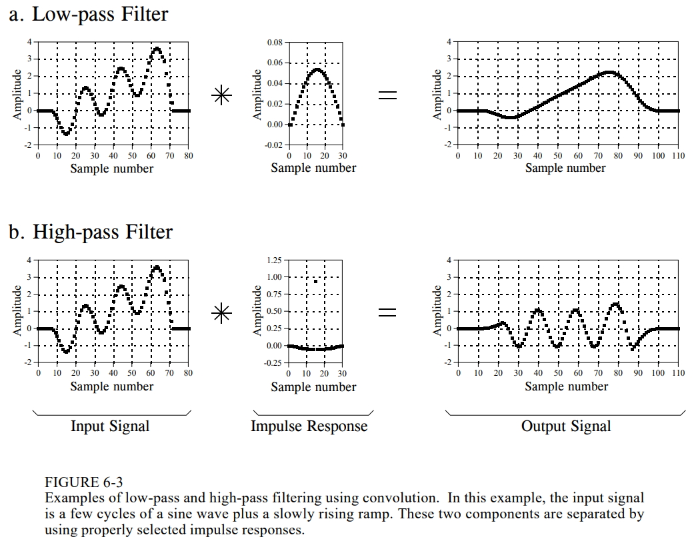
Convolution can be understood in two separate ways:
- The first looks at convolution from the viewpoint of the input signal. This involves analyzing how much each sample in the input signal contributes to many points in the output signal.
- The second way looks at convolution from the viewpoint of the output signal. This examines how each sample in the output signal has received information from many points in the input signal.
The first viewpoint is important because it provides a conceptual understanding of how convolution pertains to DSP. The second viewpoint describes the mathematics of convolution.
Chapter 7: Properties of Convolution
Delta Function
The simplest impulse response is nothing more than a delta function. That is, an impulse on the input produces an identical impulse on the output. This means all signals are passed through the system without change. Convolving any signal with a delta function results in exactly the same signal.
$$x[n] * \delta[n] = x[n]$$
This makes the delta function the identity for convolution, analagous to zero being the identity for addition and $1$ being the identity for multiplication.
If the delta function is made larger or smaller in amplitude, the resulting system is an amplifier or attenuator. Amplification results if $k$ in the below formula is greater than $1$, attenuation if k is less than $1$.
$$x[n] * k \delta[n] = kx[n]$$
A relative shift between the input and output signals corresponds to an impulse response that is a shifted delta function. The variable $s$ determines the amount of shift.
$$x[n] * \delta[n+s] = x[n+s]$$
Low-Pass and High-Pass Filters
The design of digital filters is covered in detail in later chapters. In general, low-pass filter kernels are composed of a group of adjacent positive points, resulting in the output signal being a weighted average of many adjacent points from the input signal. As shown by the sinc function in (c) below, some low-pass filter kernels include a few negative valued samples in the tails.
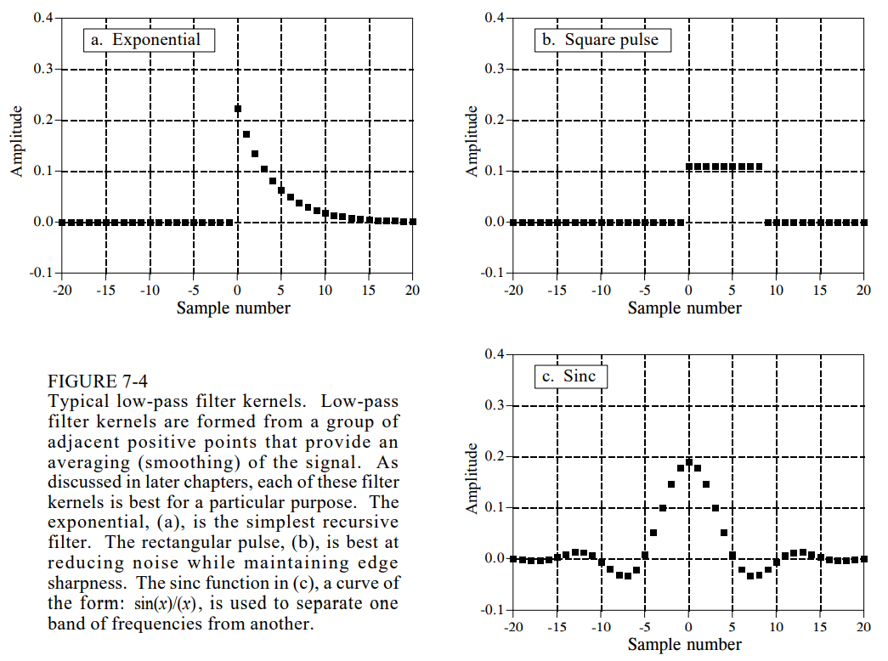
Figure 7-5 shows 3 common high-pass filter kernels, derived from the corresponding low-pass filter kernels.
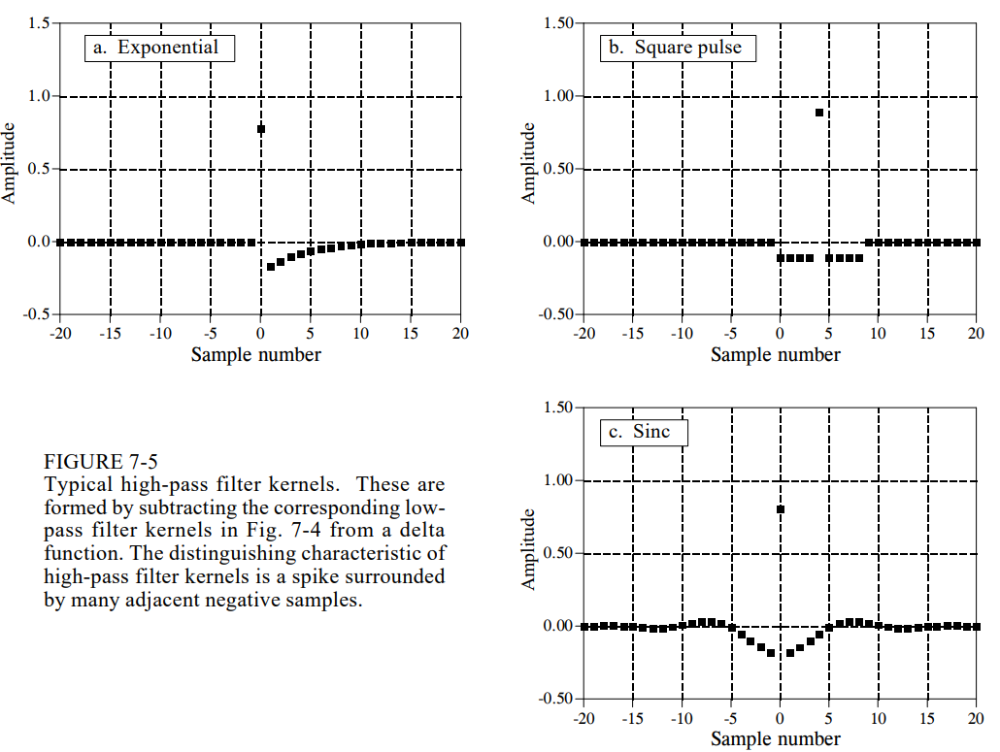
Zero Phase, Linear Phase, and Nonlinear Phase
A signal is said to be zero phase if it has left-right symmetry around sample $0$. A signal is said to be linear phase if it has left-right symmetry, but around some point other than $0$. A linear phase signal can be changed to a zero phase signal (and vice versa) simply by shifting. Lastly, a signal is nonlinear phase if it does not have left-right symmetry.
Mathematical Properties
Convolution is a commutative operation. The order in which the two signals are convolved make no difference:
$$a[n] * b[n] = b[n] * a[n]$$
The associative property provides that the order of the convolutions does not matter:
$$(a[n] * b[n]) * c[n] = a[n] * (b[n] * c[n])$$
It also has the distributive property:
$$a[n] * b[n] + a[n] * c[n] = a[n] * (b[n] + c[n])$$
The associative property is used in system theory to describe how cascaded systems behave. The distributive property describes the operation of parallel systems with added outputs.
Correlation
Given a signal of some known shape, correlation is the best way to determine where (or if) the signal occurs in another signal (or amongst random noise). Correlation is an operation similar to convolution. As with convolution, it uses two signals to produce a third. This third signal is called the cross-correlation of the two input signals. The amplitude of each sample in the cross-correlation signal is a measure of how much the received signal resembles the target signal at that location.
Chapter 8: The Discrete Fourier Transform
The general term Fourier transform can be broken into 4 categories. A signal can be either continuous or discrete, and either periodic or aperiodic.
Aperiodic-Continuous
- Includes decaying exponentials and the Gaussian curve
- Extends to both positive and negative infinity without repeating in a periodic pattern
- The Fourier transform for this type of signal is simply called the Fourier Transform
Periodic-Continuous
- Includes sine waves, and any shape of waveform that repeats itself in a regular pattern from positive to negative infinity
- This version of Fourier transform is called the Fourier Series
Aperiodic-Discrete
- Signals are only defined at discrete points between positive and negative infinity
- Signals do not repeat themselves in periodic fashion
- This type of Fourier transform is called the Discrete Time Fourier Transform
Periodic-Discrete
- Discrete signals that repeat themselves in a periodic fashion from negative to positive infinity
- This type of Fourier transform is called the Discrete Fourier Transform, or sometimes the Discrete Fourier Series
An infinite number of sinusoids are required to synthesize a signal that is aperiodic. This makes it impossible to calculate the DTFT in a computer algorithm. The only type of Fourier transform that can truly be used in DSP is the DFT. Each of the four Fourier transforms can be subdivided into real and complex versions.
Notation and Format of the Real DFT
The DFT changes an $N$-point input signal into two $N/2+1$ point output signals. The input signal contains the signal being decomposed, while the two output signals contain the amplitudes of the component sine and cosine waves.
The input signal is said to be in the time domain. The frequency domain is used to describe the amplitudes of the sine and cosine waves. If you know one domain, you can calculate the other. Given the time domain signal, the process of calculating the frequency domain is called decomposition, analysis, or the forward DFT (or simply the DFT). If you know the frequency domain, calculating the time domain is called synthesis or the inverse DFT.
Standard DSP notation uses lower case letters to represent time domain signals, such as $x[]$, $y[]$, and $z[]$. The corresponding upper case letters are used to represent their frequency components.
Assume an $N$-point time domain signal is contained in $x[]$. The frequency domain of this signal is called $x[]$, and consists of two parts, each an array of $N/2+1$ samples. These are the real part of $x[]$, $ReX[]$, and the imaginary part of $x[]$, $ImX[]$. The values of $ReX[]$ are the amplitudes of the cosine waves, while the values in $ImX[]$ are the amplitudes of the sine waves.
The horizontal axis of the frequency domain can be labeled in one of 3 ways:
- As an array index that runs between $0$ and $N/2$
- As a fraction of the sampling frequency, running between $0$ and $0.5$
- As a natural frequency, running between $0$ and $\pi$
The third style is similar to the second, except the horizontal axis is multiplied by $2 \pi$. The real and imaginary parts are written $ReX[\omega]$ and $ImX[\omega]$, where $\omega$ takes on $N/2+1$ equally spaced values between $0$ and $\pi$. This parameter is called the natural frequency and has units of radians.
DFT Basis Functions
The sine and cosine waves used in the DFT are commonly called the DFT basis functions. The basis functions are a set of sine and cosine waves with unity amplitude. If you assign each amplitude to the proper sine or cosine wave, the result is a set of scaled sine and cosine waves that can be added to form the time domain signal.
The DFT basis functions are generated from the equations:
$$c_k[i] = cos(2 \pi k i / N)$$
$$s_k[i] = sin(2 \pi k i / N)$$
- $c_k[i]$ and $s_k[i]$ are the cosine and sine waves
- $k$ determines the frequency of the wave
Synthesis, Calculating the Inverse DFT
Pulling together everything so far, we can write the synthesis equation:
$$x[i] = \sum_{k=0}^{N/2} Re \bar{X} [k] ~cos(2 \pi k i / N) + \sum_{k=0}^{N/2} Im \bar{X} [k] ~sin(2 \pi k i / N)$$
$x[i]$ is the signal being synthesized, with the index $i$ running from $0$ to $N-1$. $Re \bar{X} [k]$ and $Im \bar{X} [k]$ hold the amplitudes of the cosine and sine waves, respectively, with $k$ running from $0$ to $N/2$.
In words: any N-point signal $x[i]$ can be created by adding $N/2+1$ cosine waves and $N/2+1$ sine waves. The amplitudes of the cosine and sine waves are multiplied by the basis functions to create a set of scaled sine and cosine waves. Adding the scaled sine and cosine waves produces the time domain signal $x[i]$.
The amplitudes of the cosine and sine waves are held in the arrays $Im \bar{X} [k]$ and $Re \bar{X} [k]$. The synthesis equation multiplies these amplitudes by the basis functions to create a set of scaled sine and cosine waves.
Suppose you are given a frequency domain representation, and asked to synthesize the corresponding time domain signal. To start, you must find the amplitudes of the sine and cosine waves - i.e., given $Im \bar{X} [k]$ and $Re \bar{X} [k]$, using the following equations:
$$Re \bar{X} [k] = \frac{Re X [k]}{N/2}$$
$$Im \bar{X} [k] = - \frac{Im X[k]}{N/2}$$
Except for two special cases:
$$Re \bar{X} [0] = \frac{Re X [0]}{N}$$
$$Re \bar{X} [N/2] = \frac{Re X [N/2]}{N}$$
Spectral density describes how much signal (amplitude) is present per unit of bandwidth. To convert the sinusoidal amplitudes into a spectral density, divide each amplitude by the bandwidth represented. The bandwidth can be defined by drawing dividing lines between the samples. For example, sample $5$ occurs in the band between $4.5$ and $5.5$, etc. An exception is the samples at each end, which have one-half of this bandwidth.
Analysis, Calculating the DFT
The DFT can be calculated in three different ways. 1) The problem can be approached as a set of simultaneous equations. This provides a useful understanding, but is too inefficient to be practical. 2) The second method is correlation, based on detecting a known waveform in another signal. 3) The third method, the fast Fourier transform (FFT) decomposes a DFT with $n$ points into $N$ DFTs with a single point, and is hundreds of times faster than the other methods.
DFT by Simultaneous Equations
Suppose you are given $N$ values from the time domain, and asked to calculate the $N$ values of the frequency domain. Algebra provides the answer that to solve for $N$ unknowns, you must be able to write $N$ linearly independent equations. To do this, take the first sample from each sinusoid and add them together. The sum must be equal to the first sample in the time domain signal, thus providing the first equation. Likewise, an equation can be written for each of the remaining points in the time domain signal, resulting in the $N$ required equations. The solution can then be found using a method such as Gaussian elimination.
DFT by Correlation
Correlation detects a known waveform contained in another signal, by multiplying the two signals and adding all the points in the resulting signal. The single number that results is a measure of how similar the two signals are.
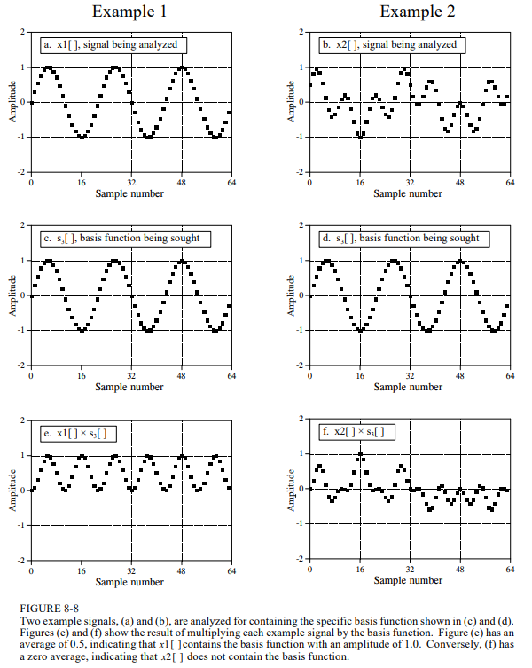
The following equations describe how to calculate the frequency domain from the time domain.
$$ReX[k] = \sum_{i=0}^{N-1} x[i] ~cos(2 \pi k i / N)$$
$$ImX[k] = \sum_{i=0}^{N-1} x[i] ~sin(2 \pi k i / N)$$
- $x[i]$ is the time domain signal being analyzed
- $ReX[k]$ and $ImX[k]$ are the frequency domain signals being calculated
- The index $i$ runs from $0$ to $N-1$, and the index $k$ runs from $0$ to $N/2$
Each sample in the frequency domain is found by multiplying the time domain signal by the sine or cosine wave being looked for, and adding the resulting points. This is the process of correlating the input signal with each basis function.
Duality
The symmetry between the time and frequency domains is called duality, and gives rise to interesting properties. A single point in the frequency domain corresponds to a sinusoid in the time domain, and vice versa. Also, convolution in the time domain corresponds to multiplication in the frequency domain, and vice versa.
Polar Notation
So far, the frequency domain has been described as a group of amplitudes of cosine and sine waves. This is rectangular notation. Alternatively, the frequency domain can be expressed in polar form, in which $ReX[]$ and $ImX[]$ are replaced with two other arrays, the magnitude of $X[]$, written as $MagX[]$, and the phase of $X[]$, written as $Phase[X]$.
They are a pair-for-pair replacement, for example $MagX[0]$ and $PhaseX[0]$ are calculated using only $ReX[0]$ and $ImX[0]$, etc. The addition of a cosine and sine wave results in a cosine wave with a different amplitude and phase shift.
$$A ~cos(x) + B ~sin(x) = M ~cos(x + \theta)$$
No information is lost in this process; given one representation, you can calculate the other. The information contained in the variables $M$ and $\theta$ are contained in the amplitudes $A$ and $B$. $MagX[]$ holds the amplitude of the cosine wave, while $PhaseX[]$ holds the phase angle of the cosine wave.
$$MagX[k] = (ReX[k]^2 + ImX[k]^2)^{1/2}$$
$$PhaseX[k] = arctan \left( \frac{ImX[k]}{ReX[k]} \right)$$
$$ReX[k] = MagX[k] ~cos(PhaseX[k])$$
$$ImX[k] = MagX[k] ~sin(PhaseX[k])$$
With rectangular notation, the DFT decomposes an $N$ point signal into $N/2+1$ cosine waves, each with a specified amplitude (called magnitude) and phase shift. Polar notation uses cosine waves instead of sine waves because sine waves cannot represent the DC component of a signal.
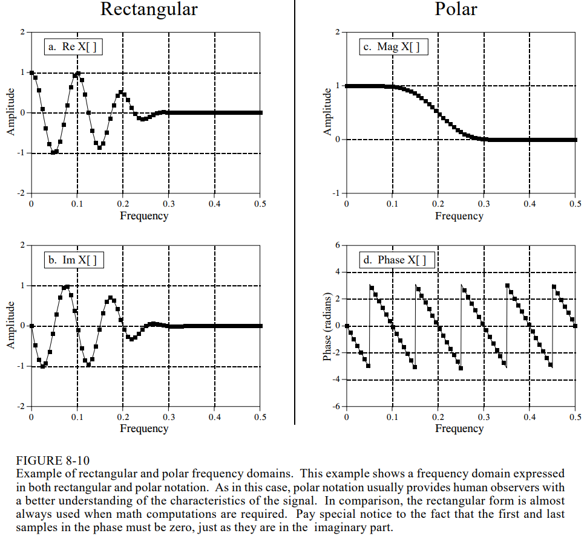
Rectangular notation is usually the best choice for calculations, and in comparison, graphs are almost always in polar form.
Chapter 9: Applications of the DFT
This chapter describes 3 common ways in which the DFT is used:
- To calculate a signal's frequency spectrum: this is a direct examination of information encoded in the frequency, phase, and amplitude of the component sinusoids. Human speech and hearing use this type of encoding.
- Finding a system's frequency response from the system's impulse response and vice versa: this allows systems to be analyzed in the frequency domain, just as convolution allows systems to be analyzed in the time domain.
- As an intermediate step in more elaborate signal prcoessing techniques: an example is FFT (fast Fourier transform) convolution, an algorithm for convolving signals that is hundreds of times faster than conventional methods.
Spectral Analysis of Signals
Suppose we want to investigate the sounds that travel through the ocean. A microphone is placed in the water and the resulting electronic signal amplified, then an analog low-pass filter is used to remove all frequencies above $80 Hz$, so that the signal can be digitized at $160$ samples per second. After acquiring and storing several thousand samples, what next?
The first thing is to simply look at the data. Figure 9-1 shows $256$ samples from our imaginary experiment. All that can be seen is a noisy waveform that conveys little information to the human eye. The next step is to multiply this signal by a smooth curve called a Hamming window. This results in a $256$ point signal where the samples near the ends have been reduced in amplitude, shown in (c).
Taking the DFT results in the $129$ point frequency spectrum in (d), which also looks noisy, as there is not enough information in the original $256$ points to obtain a well-behaved curve. Using a longer DFT, although it provides better frequency resolution, provides the same level of noise.
The answer is to use more of the original signal in a way that doesn't increase the number of points in the frequency spectrum. This can be done by breaking the input signal into many $256$ point segments. Each of these segments is multiplied by the Hamming window, run through a $256$ point DFT, and the resulting frequency spectra are then averaged to form a single $129$ point frequency spectrum (figure (e)). Only the magnitude of the freuqency domain is averaged; the phase is usually discarded because it doesn't contain useful information.
A second method for reducing spectral noise is a low-pass digital filter, but it does so at the expense of resolution.
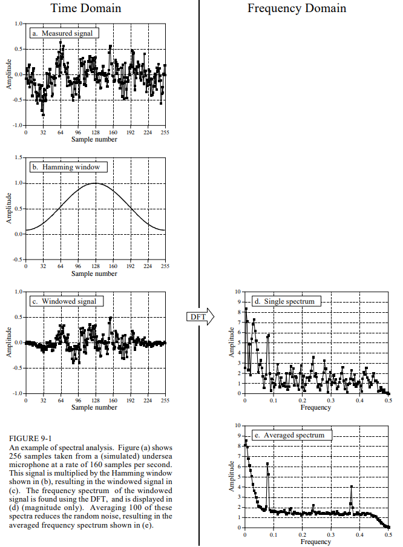
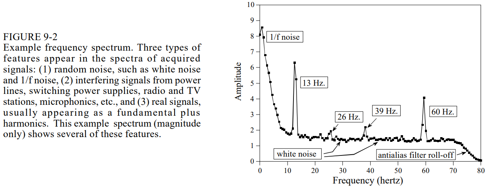
Suppose there are frequency peaks very close together. There are two factors that limit the frequency resolution that can be obtained; i.e., how close the peaks can be without merging into a single entity. The first factor is the length of the DFT. To separate two closely spaced frequencies, the sample spacing must be smaller than the distance between the two peaks.
The second factor limiting resolution is more subtle. A signal created by adding two sine waves with only a slight difference will look like a single sine wave. In other words, the length of the signal limits the frequency resolution, and this is distinct from the first factor, because the length of the input signal does not have to be the same as the length of the DFT. For example, a $256$ point signal could be padded with zeros to make it $2048$ points long.
Frequency Response of Systems
Systems are analyzed in the time domain by using convolution. A similar analysis can be done in the frequency domain. Using the Fourier transform, every input signal can be represented as a group of cosine waves, each with a specified amplitude and phase shift. This means any linear system can be completely described by how it changes the amplitude and phase of cosine waves passing through it. This info is called the frequency response. The relationship between the impulse response and frequency response is the Fourier transform of its impulse response.
Impulse responses use lower case variables, while the corresponding frequency responses are upper case. $h[]$ is the common symbol for impulse response, and $H[]$ for frequency response. Systems are described in the time domain by convolution, $x[n] * h[n] = y[n]$. In the frequency domain, the input spectrum is multiplied by the frequency response, $x[f] \times H[f] = Y[f]$. i.e., convolution in the time domain corresponds to multiplication in the frequency domain.
Frequency resolution can be infinitely high if willing to pad the impulse response with an infinite number of zeros. This leads to the concept that even though the impulse response is a discrete signal, the corresponding frequency response is continuous.
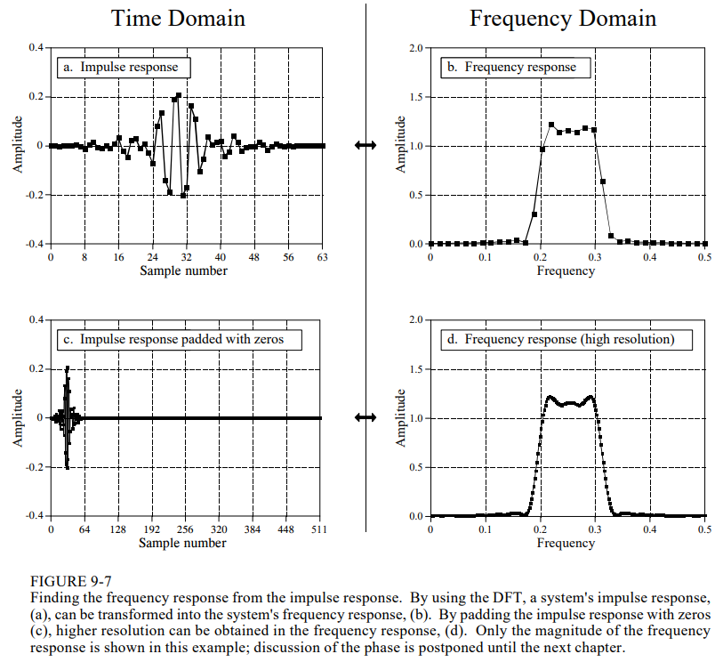
This is the DTFT, the procedure that changes a discrete aperiodic signal in the time domain into a frequency that that is a continuous curve. In mathematical terms, a system's frequency response is found by taking the DTFT of its impulse response. Since this cannot be done in a computer, the DFT is used to calculate a sampling of the true frequency response. This is the difference between what you do in a computer (the DFT) and what you do with mathematical equations (the DTFT).
Convolution via the Frequency Domain
A convolution operation can be replaced with a transformation of the two signals to the frequency domain, followed by a multiplication of the two signals and an inverse DFT. For reasons such as processing speed, the frequency domain becomes attractive whenever the complexity of the Fourier transform is less than the complexity of the convolution.
We need to define how to multiply one frequency-domain signal by another; i.e., what it means to write $x[f] \times H[f] = Y[f]$. In polar form, the magnitudes are multiplied: $MagY[f] = MagX[f] \times MagH[f]$, and the phases are added: $PhaseY[f] = Phase[X] + PhaseH[f]$. The polar form of the frequency response describes how the two amplitudes are related and how the two phases are related.
When frequency domain multiplication is carried out in rectangular form, there are cross terms between the real and imaginary parts. For example, a sine wave entering the system can produce both cosine and sine waves in the output. To multiply frequency domain signals in rectangular notation:
$$ReY[f] = ReX[f] ~ReH[f] - ImX[f] ~ImH[f]$$
$$ImY[f] = ImX[f] ~ReH[f] - ReX[f] ~ImH[f]$$
Here is a link to Part 2